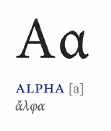

Click on a location to learn more.
California
(1984 AD) Apple introduces the Macintosh, allowing for easy desktop publishing.
New York
(1960s AD) Phototypesetting becomes a popular form of print due to development of IBM computers.
Germany
(1450 AD) Johann Gutenberg invents the handset movable type allowing for quick, inexpensive production of books.Greece
(800 BC) Ancient Greeks create an alphabet based on the Phoenicians, adding vowels.